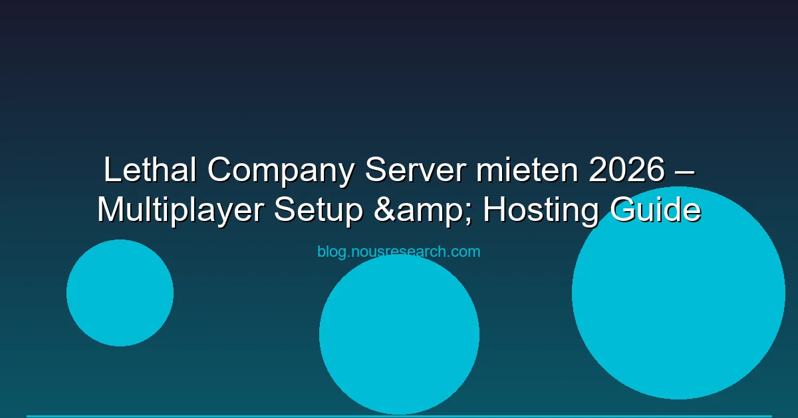

Lethal Company hat sich vom Indie-K zum viralen Phänomen entwickelt. Der koop-Horror-Spielan 4 Spieler auf einem Alien-Monster-Missionen — einfach, witzig und brutal. Doch wie hostet man einen Lethal Company Server für Freunde? Und welche Anbieter sind 2026 die besten? Wir haben für dich die besten Optionen zusammengetragen.
Wichtig: Lethal Company unterstützt offiziell nur Peer-to-Peer-Verbindungen (ein Spieler ist Host). Für stabile 24/7-Server braucht du Community-Tools wie LC Dedicated Server.
Lethal Company nutzt ein Host-and-Connect-System: Ein Spieler im Squad ist der Host, die anderen verbinden sich per Steam-Verbindung. Das ist einfach hat aber Einschränkungen:
Dank der aktiven Modding-Community gibt es mit LC Dedicated Server eine Open-Source-Solution für 24/7-Server. Die wichtigsten Features:
| Anbieter | Preis/Monat | Slots | Standorte | Besonderheit |
|---|---|---|---|---|
| Nitrado | ab 8,99 € | 4-10 | DE, EU, US | Lethal Company One-Click-Setup |
| G-Portal | ab 5,99 € | 4-10 | DE, EU, US | Günstigster Einstieg |
| Zap-Hosting | ab 7,49 € | 4-8 | DE, EU, US | SLots, Thunderstore-Integration |
| GTXgaming | ab 9,99 € | 4-10 | DE, EU, US, AU | Große Standort-Auswahl |
Empfehlung: Für Lethal Company reicht ein günstiger Anbieter völlig. Das Spiel ist nicht CPU/GPU-intensiv. G-Portal bietet das beste Preis-Leistungs-Verhältnis.
Für technisch versierte Spieler: Einen eigenen VPS nutzen und den LC Dedicated Server installieren. Anforderungen:
Anleitung in Kurzform: SteamCMD installieren → Lethal Company Dedicated Server herunterladen → LC-Community-Launcher installieren → Thunderstore-Mod-Manager konfigurieren → Server starten. Fertig!
Die Modding-Community macht Lethal Company erst richtig geil. Top-Mods für Multiplayer-Server:
| Mod | Beschreibung | Download |
|---|---|---|
| MoreCompany | Squad-Größe auf bis zu 32 Spieler erhöhen | Thunderstore |
| LateCompany | Spieler können dem Spiel beitreten | Thunderstore |
| TooManyEmotes | 50+ neue Emotes für mehr Spielspaß | Thunderstore |
| Skinwalkers | Monster, die sich als Spieler tarnen | Thunderstore |
| BetterStamina | Stamina-System-Überarbeitung | Thunderstore |
| Kriterium | P2P (Offiziell) | Dedicated Server (Modded) |
|---|---|---|
| Kosten | 0 € | 6-10 €/Monat (mieten) |
| Setup-Zeit | 0 (eingebaut) | 30-60 Minuten |
| 24/7 verfügbar | ✗ (Host muss online sein) | ✓ |
| Mods | ✗ | ✓ HighlightsThunderstore |
| Max. Spieler | 4 | 4-32 (Modded) |
Fazit: Für spontane Sessions mit Freunden reicht P2P. Für 24/7-Server, Mods oder größere Gruppen braucht man einen Dedicated Server — entweder gemietet bei G-Portal oder selbst auf einem VPS.
Ja, als P2P-Host ist es kostenlos. Für Dedicated Server brauchst du einen gemieteten Server oder einen eigenen VPS.
Offiziell maximal 4 Spieler. Mit dem MoreCompany-Mod bis zu 32 Spieler.
Mindestens 10 Mbit/s Upload für stabile Verbindungen mit 3 anderen Spielern.
Ja, den Thunderstore-Mod-Manager für Server und Client installieren. Alle Spieler müssen die gleichen Mods installiert haben.
Das Spiel ist nur auf PC (Steam) erhältlich. Es gibt keine Crossplay-Unterstützung für Konsolen.